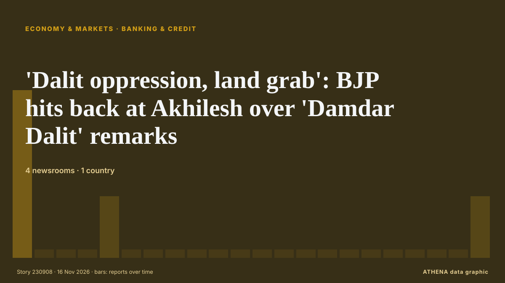

Economics, Finance & Markets
SponsoredPresented by  Cybernetics and Artificial Intelligence Lab Welcome to the Cybernetics and Artificial Intelligence Laboratory, established at the Department of Business Administration of the National and Kapodistrian University of Athens. The lab is headed by Professor Dimitrios Thomakos. The lab aims to do research that can be published in top venues. Our research uses tools and methods of Artificial Intelligence, and lies in the following areas: - Forecasting - Decision making - Cyber security - Finance We are always looking forward to collaborating with exceptional students!
Cybernetics and Artificial Intelligence Lab Welcome to the Cybernetics and Artificial Intelligence Laboratory, established at the Department of Business Administration of the National and Kapodistrian University of Athens. The lab is headed by Professor Dimitrios Thomakos. The lab aims to do research that can be published in top venues. Our research uses tools and methods of Artificial Intelligence, and lies in the following areas: - Forecasting - Decision making - Cyber security - Finance We are always looking forward to collaborating with exceptional students!
Market monitor - official figures
Which way official market measures are moving - up, down or flat - with the latest official figure and its date, and the market news ATHENA verified alongside. Official figures, not live prices.
Energy
| 1 day | 1 week | 1 month | Official figure | |
|---|---|---|---|---|
| Brent crude | ▲ | ▲ | ▼ | $92.14/bblOfficial data of 11 Nov 2026 |
| WTI crude | ▬ | ▼ | ▼ | $89.62/bblOfficial data of 11 Nov 2026 |
| US natural gas (Henry Hub) | ▬ | ▲ | ▼ | $3.00/MMBtuOfficial data of 11 Nov 2026 |
| European natural gas (1 month · 3 months · 12 months)(1M · 3M · 12M) | ▲ | ▲ | ▲ | $25.49/MMBtuOfficial data of 1 Sep 2026 |
| Coal (Australia) (1 month · 3 months · 12 months)(1M · 3M · 12M) | ▲ | ▲ | ▲ | $153.84/tOfficial data of 1 Sep 2026 |
Food
| 1 month | 3 months | 12 months | Official figure | |
|---|---|---|---|---|
| Wheat | ▲ | ▲ | ▲ | $246.85/tOfficial data of 1 Sep 2026 |
US stock markets
| 1 day | 1 week | 1 month | Official figure | |
|---|---|---|---|---|
| S&P 500 | ▼ | ▲ | ▼ | Direction only (index © Cboe)Official data of 13 Nov 2026 |
| Nasdaq Composite | ▼ | ▲ | ▼ | Direction only (index © Cboe)Official data of 13 Nov 2026 |
Rates, risk and the dollar
| 1 day | 1 week | 1 month | Official figure | |
|---|---|---|---|---|
| US 10-year Treasury yield | ▲ | ▲ | ▼ | 5.10 %Official data of 12 Nov 2026 |
| Market volatility (VIX) | ▲ | ▼ | ▲ | Direction only (index © Cboe)Official data of 12 Nov 2026 |
| US dollar, broad index | ▲ | ▲ | ▲ | 121.88Official data of 6 Nov 2026 |
The euro against other currencies
| 1 day | 1 week | 1 month | Official figure | |
|---|---|---|---|---|
| EUR/USD | ▼ | ▼ | ▼ | 1.1052 USDOfficial data of 13 Nov 2026 |
| EUR/GBP | ▬ | ▲ | ▼ | 0.8356 GBPOfficial data of 13 Nov 2026 |
| EUR/CHF | ▲ | ▲ | ▼ | 0.9266 CHFOfficial data of 13 Nov 2026 |
| EUR/JPY | ▬ | ▬ | ▼ | 176.83 JPYOfficial data of 13 Nov 2026 |
| EUR/CNY | ▼ | ▼ | ▼ | 7.3738 CNYOfficial data of 13 Nov 2026 |
| EUR/TRY | ▬ | ▼ | ▲ | 55.667 TRYOfficial data of 13 Nov 2026 |
| EUR/NOK | ▬ | ▲ | ▼ | 10.5695 NOKOfficial data of 13 Nov 2026 |
Sources: US Energy Information Administration (oil, US gas), IMF (European gas, coal, wheat), US Treasury and Federal Reserve (10-year yield, dollar index) Cboe (VIX), S&P Dow Jones Indices (S&P 500) and Nasdaq (Nasdaq Composite), via FRED (Federal Reserve Bank of St. Louis); euro reference rates © European Central Bank. Figures are the latest official values with their date - not live prices. Directions are computed by ATHENA.
Crypto, ETFs and shares in the news
- Financials lead Indian shares higher as foreign inflows hit monthly peak Risk 2.2 16 Nov
- Asian chip stocks tumble ahead of Nvidia Q3 earnings Risk 3.3 16 Nov
- Seoul stocks dip over 3 pct on tech losses amid lingering Nvidia jitters Risk 3.7 16 Nov
- Brazil's Largest Exchange Mercado Bitcoin Halts Withdrawals After $40 Million Hack Risk 1.5 16 Nov
- Anthropic's record IPO faces some big questions Risk 1.1 16 Nov
- Intel sued by shareholders following 29pct stock plunge Risk 5.4 16 Nov
- The 10 biggest stock market IPOs Risk 0.0 16 Nov
- China stocks fall as AI hardware selloff, weak data weigh Risk 5.4 16 Nov
- What cryptocurrency firms need to know about Kenya’s new licensing rules Risk 0.0 16 Nov
- Seoul stocks open tad lower ahead of Nvidia earnings, key events Risk 4.5 16 Nov

Banking & credit'Dalit oppression, land grab': BJP hits back at Akhilesh over 'Damdar Dalit' remarks
In response to Akhilesh Yadav's recent appeal to the Dalit community, BJP leaders have launched a series of critiques against the Samajwadi Party chief. from Times of India
| 3 Nov | 124 |
|---|---|
| 4 Nov | 114 |
| 5 Nov | 118 |
| 6 Nov | 95 |
| 7 Nov | 42 |
| 8 Nov | 65 |
| 9 Nov | 155 |
| 10 Nov | 129 |
| 11 Nov | 129 |
| 12 Nov | 113 |
| 13 Nov | 71 |
| 14 Nov | 36 |
| 15 Nov | 50 |
| 16 Nov | 34 |
China's fixed-asset investment down 8.1 pct in first 10 months
A deepening reliance on external demand leaves China more exposed to shocks abroad as domestic momentum fades, analysts say. from CNBC World
Wind and rain warnings for seven counties as heavy downpours on the way
Localised flooding and difficult travelling conditions are possible, with sleet or snow forecast in Donegal. from TheJournal.ie
New World Development proposes US$3.2 billion rights issue
Bain Capital has decided against investing in the indebted company. from The Business Times
Japanese Yen trims previous gains as weak Japanese GDP data holds bulls
The Japanese Yen (JPY) posts marginal gains against the US Dollar (USD) on Monday but is pulling back from session highs as the downbeat Japanese Gross Domestic Product (GDP) data seen earlier in the… from FXStreet
Intel sued by shareholders following 29pct stock plunge
NEW YORK: Intel has been sued by shareholders who accused the US chipmaker of defrauding them by concealing the impact of a prolonged slowdown in personal computer sales that caused its stock price… from New Straits Times
The 10 biggest stock market IPOs
WASHINGTON: Anthropic, the developer of the Claude chatbot, is set to start trading on Wall Street on Thursday. from New Straits Times
‘Escaping extreme poverty and Naxalism has improved tribal lives’, says PM Modi
PM cites World Bank report to claim that 50 crore Indians have escaped extreme poverty over last 12 to 13 years; says 125 districts were Naxal-affected in 2014, as previous regimes closed their eyes… from The Hindu
Iran facing one of fastest economic collapses ever, Bessent says
US Treasury Secretary Scott Bessent said on Sunday that Iran was experiencing one of the fastest economic collapses in history, as Washington expanded its pressure campaign beyond a naval blockade to… from Iran International (English)
Gold and silver prices rise on commodity markets
Gold and silver prices have risen on the COMEX commodity exchange in New York. from AzerNews
Kenya: Ruto Hits Back At Opposition Over SGR Corruption Claims
[Capital FM] Nairobi -- President William Ruto has challenged opposition leaders over their interpretation of a World Bank report that raises concerns about corruption and procurement weaknesses in… from AllAfrica
Allies rally for Jensen Huang’s return as Nvidia faces compliance and succession questions
Allies of Jensen Huang are pressing for his return as Nvidia chief executive, but reinstating the founder alone would not address the governance weaknesses exposed by his sudden departure: concerns… from DigiTimes Asia
Japan's economy contracts annualised 0.1% in July-September
Weak consumer spending and record-breaking rains damp GDP growth and complicate interest rate plans. from Financial Times - Global economy
China’s retail sales growth slows in October
The 0.4% year-on-year increase also missed the 0.8% forecast despite a week-long holiday, highlighting challenges in kickstarting consumer activity. from Free Malaysia Today
Thailand's GDP growth picks up to 2.9% in Q3 on strong exports
The country attracted a surge in investment tied to AI, data centres and advanced electronics. from The Business Times
Asian shares fall before Nvidia earnings, Anthropic IPO test tech rally
Nvidia’s market value tumbled from US$5.8 trillion in early October to US$3.9 trillion as investors rushed to exit following Jensen Huang’s departure. from Free Malaysia Today
Japan economy shrinks 0.1% in Q3, first fall in 4 quarters as inflation hits households
The pushback from economists matters more for markets than the headline miss. from investingLive (ForexLive)
BoE policymaker refuses to rule out back-to-back rate rises
Clare Lombardelli says high energy prices and resilience of UK growth mean there is a case for a further increase ‘in the near term’ from Financial Times - Global economy
Malaysia set to hold rates on strong growth, signal hike in 2027
Inflation in Malaysia remain moderate, despite a surge in global oil prices. from The Business Times
Israeli military jeep runs over, injures 2 Palestinians in occupied West Bank
Troops beat Palestinian workers in Bethlehem governorate while Israeli occupiers attack home and damage property elsewhere. from Anadolu Agency (English)
Japan services activity expands for fifth month: PMI
New orders increased for a 28th straight month. from The Business Times
Binance Aims to Reopen Withdrawals After $6.3 Billion Hack
Binance says activity is returning to normal for the cryptocurrency platform following last month’s historic heist. from PYMNTS
Russell Brand’s wife shares message from disgraced comedian in prison
Brand was jailed this week after being found guilty of raping one woman and sexually assaulting three others during his career. from The Irish News (Belfast)
Trump administration kicks off fiscal 2027 with record spending and a massive deficit
The federal government kicked off fiscal 2027 with a record October deficit. from FXStreet
Pakistan could become world’s sixth-largest economy before 2050: PM Sharif
Dubai: Pakistan could become the world’s sixth-largest economy before 2050, Prime Minister Shehbaz Sharif said on Friday as he called for foreign investment in mineral processing and manufacturing. from Gulf News
Yellow Weather Warning Issued for Heavy Rainfall in Two Regions of Bulgaria
Bulgaria’s national meteorological bureau has issued the Code Orange warning of dangerous weather for several districts for November 13 because. from The Sofia Globe
Dubai Police bust gang who recruited people to open bank accounts for investment fraud
Dubai Police have arrested members of a gang accused of investment fraud. from Khaleej Times (working feed)
West Bank: Israeli settlers attack Palestinian home, olive harvesters
JENIN: Settlers attacked Palestinian families from the town of Ya’bad, west of Jenin, on Friday while they were harvesting olives, local sources reported. from Arab News
AI retreat fuels India's stock market comeback in great rotation trade
The MSCI India gauge has rebounded 11% from a six-month low set in October, adding more than $400 billion in value and almost erasing this year's losses. from Business Standard
Brazil Interest Rate Cuts Stall on US Yields
Brazil's central bank has cut five times this year, but higher US rates and 4.58% inflation shrink its room. from The Rio Times
Oklahoma AD questions Ole Miss effort; decision to play Sunday 'inexplicable'
Oklahoma AD Roger Denny was critical of the SEC's decision to move the Sooners' home game against Ole Miss to Sunday following Friday's nationwide ground stop. from ESPN
Israel advances plans for 895 new settlement homes across West Bank: Palestinian commission
LONDON: Israeli authorities have advanced 11 settlement expansion plans that would add 895 housing units across the occupied West Bank, alongside industrial and commercial developments, the… from Arab News
Nvidia stock suffers longest weekly losing streak since 2012 as market value sinks by $1.7 trillion
Jensen Huang's resignation added to Nvidia's market woes, with the stock already in a downward slide since early October. from CNBC World
PM Mitsotakis Pledges Double the Eurozone’s Growth in WSJ Interview
Mitsotakis said Greece lost 25% of its GDP during a decade of austerity. from to vima
Zamfara stands still as Gov Lawal hosts First Lady, Remi Tinubu for mega rally
Mrs Tinubu described her visit as a powerful expression of solidarity and compassion, as well as a commitment to women’s welfare and advancement. from Premium Times